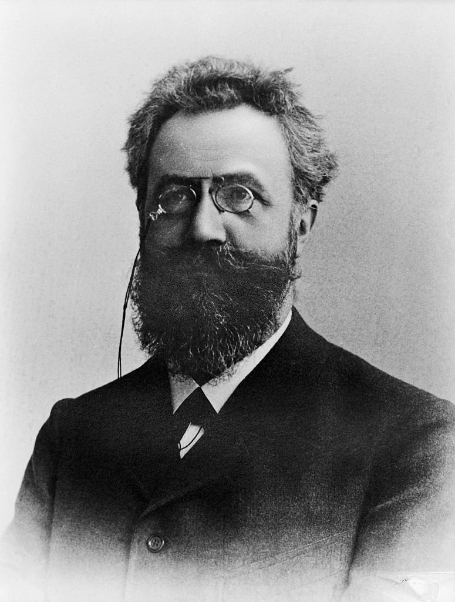
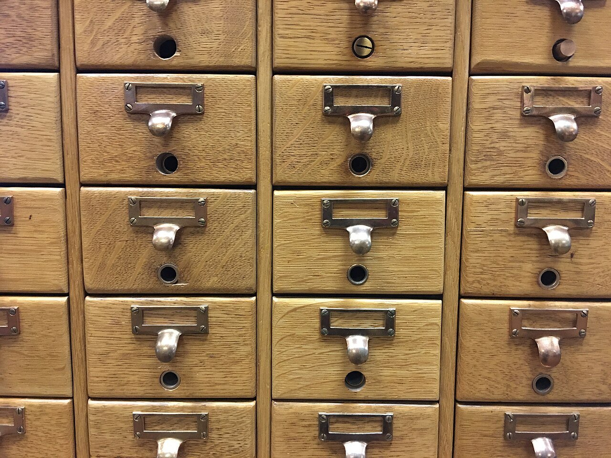
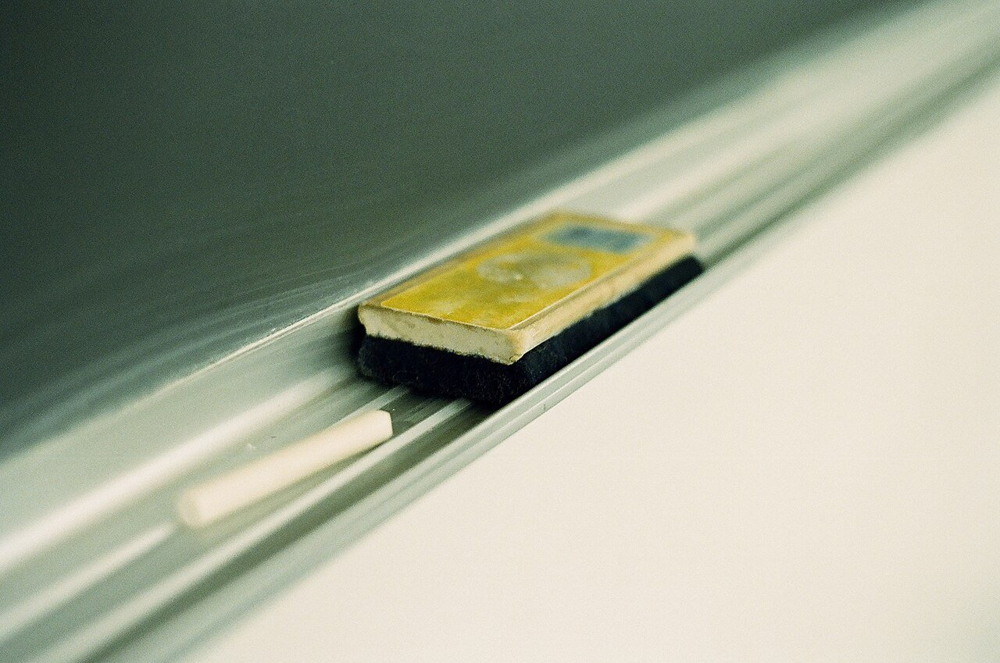
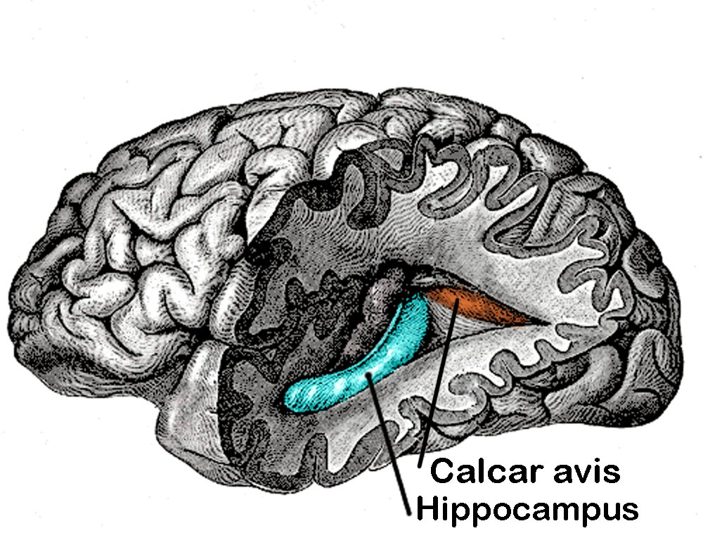
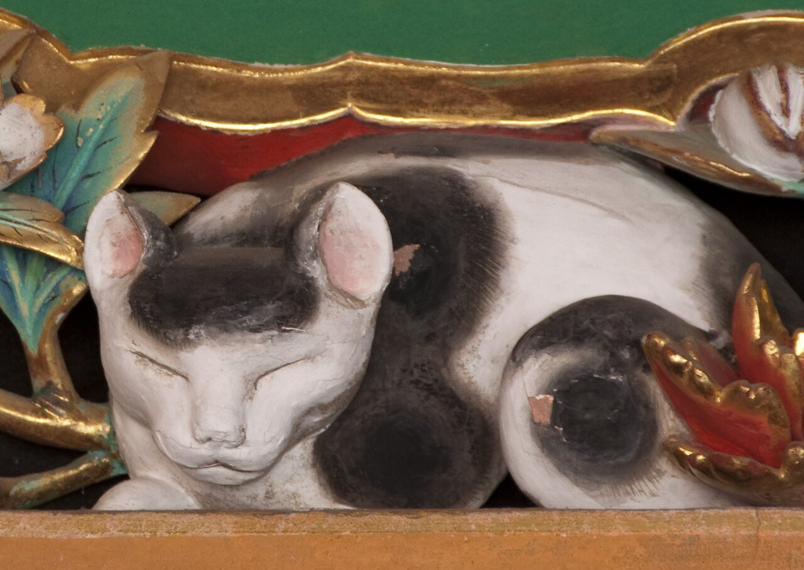

ドイツ、1879〜80年。29歳の心理学者ヘルマン・エビングハウスは、毎日のように、たとえば「WID」「ZOF」のような意味のない文字の並びを覚えていました。覚えては時間をおき、忘れたころにもう一度覚え直す。実験台は、自分ひとりです。
人の名前、きのうの夕食、カギを置いた場所。私たちは毎日、何かを忘れています。忘れることは、ふつう「記憶の失敗」だと思われています。でも、脳はなぜ、覚えたことをそのまま残しておかないのでしょうか。
覚えたはずのことが、なぜ消えていくのか。140年前の「忘却曲線」から、眠っている間の記憶の整理、そして忘れることの意外な役目まで。グラフと流れ図でたどると、忘れることは脳の故障ではないのかもしれない、と見えてきます。
ドイツ、1879〜80年。29歳の心理学者ヘルマン・エビングハウスは、毎日のように、たとえば「WID」「ZOF」のような意味のない文字の並びを覚えていました。覚えては時間をおき、忘れたころにもう一度覚え直す。実験台は、自分ひとりです。
人の名前、きのうの夕食、カギを置いた場所。私たちは毎日、何かを忘れています。忘れることは、ふつう「記憶の失敗」だと思われています。でも、脳はなぜ、覚えたことをそのまま残しておかないのでしょうか。
記憶は消えるというより取り出しにくくなるもの。そして、古い情報や細かすぎる情報を手放すことは、いまの判断を助けるはたらきだと考えられている。
エビングハウスが知りたかったのは、「人はどのくらいの速さで忘れるのか」でした。意味のある単語では、知っているかどうかで覚えやすさが変わってしまいます。そこで、だれにとっても初めての、意味のないつづりを使いました。
測り方にも工夫があります。思い出せた数ではなく、覚え直すのにかかった時間が、最初よりどれだけ短くてすんだかを測ったのです。これを「節約率」といいます。たとえば最初に10分かかった暗記が、覚え直しでは4分ですんだら、節約率は60%です。こうして約7か月、多い日は1日3回の実験を重ね、1885年に本にまとめました。

このグラフは「20分で42%を忘れる」と紹介されることがあります。ただ、縦の目盛りは思い出せた量ではなく、覚え直しが楽になった割合です。しかも材料は意味のないつづりで、記録は本人1人のもの。ふだんの勉強にそのまま当てはまる数字ではありません。
それでも、2015年にオランダの研究者が同じ方法でやり直すと、全体としてはよく似た形の曲線が得られました。ただし1か月後の値は、エビングハウスよりかなり低めでした。
グラフの右端に注目してください。31日たっても、覚え直しは2割ほど楽でした。本人は「もう覚えていない」と感じていても、記憶の手がかりは頭の中に残っていたことになります。
では、なぜ思い出せなくなるのでしょう。有力な説明のひとつが「干渉」です。前に覚えたことが新しいことの邪魔をしたり、逆に新しいことが古いことを思い出しにくくしたりします。新しい電話番号を覚えたら、前の番号が出てこなくなる。そんな経験は、だれにでもあるはずです。


1924年、アメリカのジェンキンスとダレンバックは、2人の参加者に意味のないつづりを覚えてもらい、その後に眠った場合と起きていた場合をくらべました。すると、眠ったあとのほうが忘れた量が少なかったのです。研究者たちは、時間がたつだけで記憶が薄れるのではなく、起きている間のいろいろな出来事が邪魔をする、と考えました。
では、覚えた記憶は、どうやって長く残る記憶になるのでしょう。カギをにぎるのが、脳の奥にある「海馬」です。1953年、患者H.M.として知られるヘンリー・モレゾンは、27歳のときに重いてんかんの治療のため、左右の海馬の大部分をふくむ部分を手術で取りのぞかれました。すると新しい出来事を長く覚えておくことができなくなったのです。海馬が、新しい記憶の入り口だとわかった有名な例です。


いまの研究では、新しい記憶はまず海馬にいったん置かれ、その後、時間をかけて大脳皮質（脳の表面をおおう、考えたり覚えたりする部分）へと移されていくと考えられています。その作業がよく進むのが、眠っている間です。動物の研究などから、深い眠りのとき、その日の記憶がくり返し再生されるように脳が活動すると考えられています。
先ほどの2015年のやり直し実験でも、1日後と2日後の節約率が、なめらかな曲線から予想されるより高めに出ました。研究者たちは、睡眠の影響でそうなった可能性にふれつつも、この種の実験ではまだ確かめられていない、と慎重に書いています。
ここで、問いをひっくり返してみます。もし何ひとつ忘れなかったら、どうなるでしょう。2017年、カナダの神経科学者リチャーズとフランクランドは、記憶の目的は過去を正確に残すことではなく、よりよい判断をすることだという考えを論文で示しました。
状況が変われば、古い情報は判断を迷わせます。また、1つひとつの出来事を細かく覚えすぎると、そこから共通のルールを見つけにくくなります。近所の犬の模様を1匹ずつ細かく覚えていても、「犬とはどんな動物か」はつかめない、というわけです。だから、古いものや細かすぎるものを手放す「忘れる力」は、覚える力と同じくらい大切だ──というのが2人の主張です。
忘れることを前提にすると、覚え方も変わってきます。2006年のアメリカの実験では、5分間の読む時間を4回とった学生より、読む時間は1回だけで、残り3回を「思い出すテスト」にあてた学生のほうが、1週間後によく覚えていました。思い出そうとする行為そのものが、記憶を強くするらしいのです。
復習の間をあけることも大切です。184本の論文をまとめた2006年の分析では、本番までの期間が長いほど、復習の間隔も長くしたほうがよく覚えていられる傾向が見られました。少し忘れかけたころに、がんばって思い出す。忘れることは、覚えることの敵ではなく、相棒なのかもしれません。
20分後に、覚え直しで節約できた時間の割合エビングハウスの実験（1885年）。思い出せた量ではない
31日後でも、覚え直しで節約できた時間の割合エビングハウスの実験（1885年）
読む時間1回とテスト3回のグループが、1週間後に思い出せた割合Roediger と Karpicke（2006年）
思い出すことは、記憶を強くします。ところが、その裏で別のことが起きているという研究があります。1994年にアメリカのアンダーソンらが示した「検索誘導性忘却」です。
たとえば「果物：オレンジ」「果物：バナナ」のように、同じ仲間の言葉をいくつか覚えます。そのうち「オレンジ」だけを何度も思い出す練習をすると、練習しなかった「バナナ」は、同じように覚えた別の仲間の言葉よりも思い出しにくくなるのです。
脳が目当ての記憶を取り出すとき、まぎらわしいライバルを抑えこむからではないか、と考えられています（ほかの説明もあり、議論は続いています）。
つまり脳は、よく使う記憶を前に出し、使わないものを少しずつ奥へしまっているのかもしれません。次に何かを思い出せなかったら、それは脳が「いま必要なもの」を選んだあとなのだと考えてみてください。